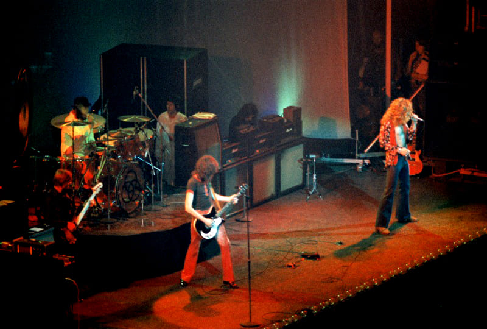

Led Zeppelin fue un grupo británico de rock fundado en Londres en 1968 por el guitarrista Jimmy Page, quien había pertenecido a The Yardbirds. La banda estuvo integrada por Jimmy Page en la guitarra, John Paul Jones como bajista y tecladista, el vocalista Robert Plant y John Bonham en la batería (que había coincidido con Plant en The Band of Joy). Es considerada una de las bandas más importantes e influyentes de la década de los 70 y de la historia del rock.
| Año | Tema | Escuchas |
| 1971 | Stairway to Heaven | 15.236.200 |
| 1969 | Whole lotta love | 12.200.000 |
| 1970 | The Inmmigrant song | 9.500.000 |
| Datos extraidos de la web spotify. | ||